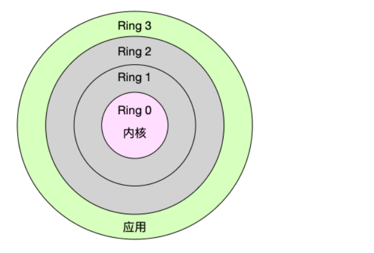
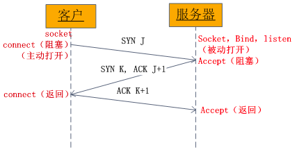
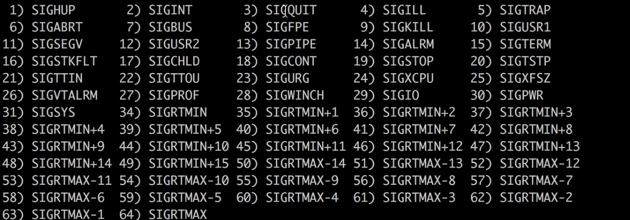
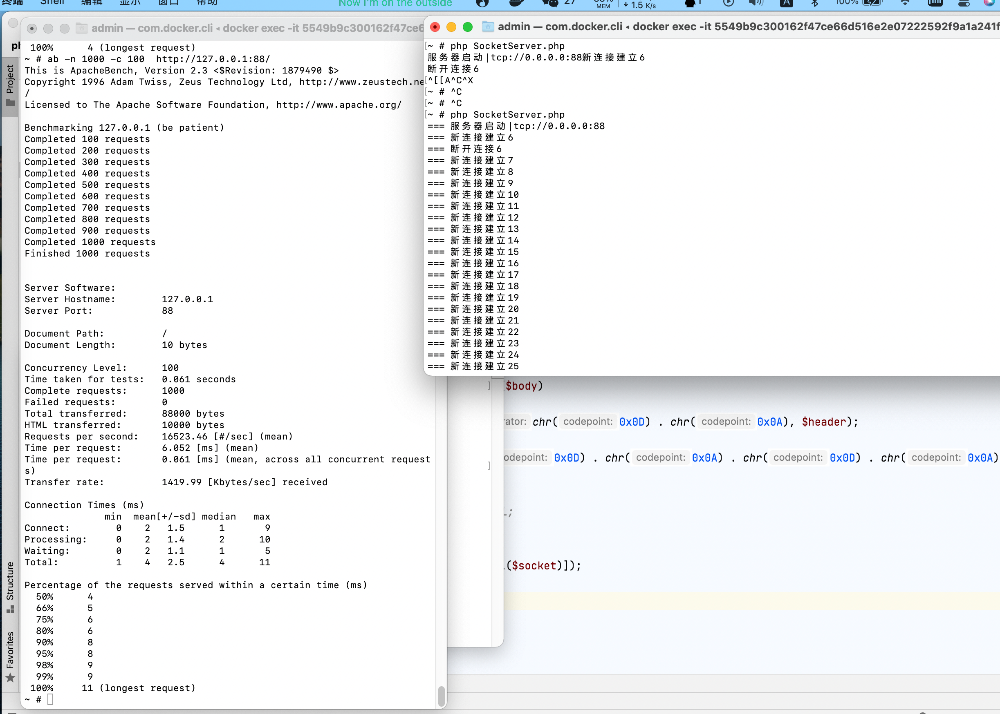
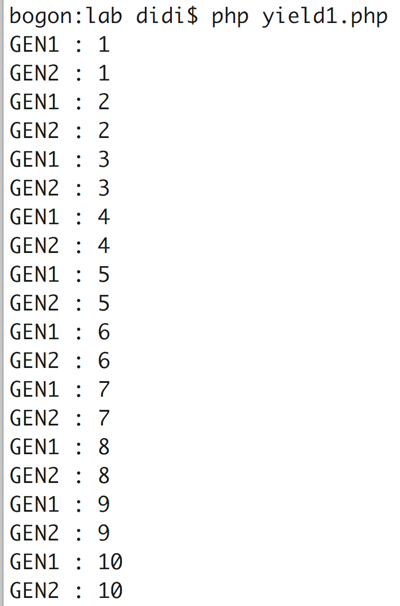

序言
个人笔记
作者 adminv@88.com
什么是进程
Linux 是一个多任务操作系统，它支持远大于 CPU 数量的任务（这里可以直接理解为进程）同时运行。当然，这些任务实际上并不是真的在同时运行，而是因为系统在很短的时间内，将 CPU 轮流分配给它们，造成多任务同时运行的错觉。而在每个任务运行前，CPU 都需要知道任务从哪里加载、又从哪里开始运行（这里任务的运行，就是进程的运行，简单的理解电脑运行一个进程，其实就是解释执行一段源码，而CPU就是真正执行源码的，源码放在内存中的哪一块，这个CPU是要知道的），也就是说，需要系统事先帮它设置好CPU 寄存器和程序计数器
1.什么是进程
上面我们讲到进程，那么到底什么是进程呢？进程（有时候也称做任务）是指一个程序运行的实例。在 Linux 系统中，线程就是能并行运行并且与他们的父进程（创建他们的进程）共享同一地址空间（一段内存区域）和其他资源的轻量级的进程。
2.什么是 CPU 上下文
CPU 寄存器和程序计数器就是 CPU 上下文，因为它们都是 CPU 在运行任何任务前，必须的依赖环境。上下文
指某一时间点 CPU 寄存器和程序计数器的内容
CPU 寄存器是 CPU 内置的容量小、但速度极快的内存（与之对应的是 CPU 外部相对较慢的 RAM 主内存）。
程序计数器则是一个专用的寄存器，是用来存储 CPU 正在执行的指令位置、或者即将执行的下一条指令位置。
3.什么是 CPU 上下文切换
CPU上下文切换就是保存上一个任务运行的寄存器和计数器信息切换到加载下一个任务的寄存器和计数器的过程
就是先把前一个任务的 CPU 上下文（也就是 CPU 寄存器和程序计数器）保存起来，然后加载新任务的上下文到这些寄存器和程序计数器，最后再跳转到程序计数器所指的新位置，运行新任务。
而这些保存下来的上下文，会存储在系统内核中，并在任务重新调度执行时再次加载进来。这样就能保证任务原来的状态不受影响，让任务看起来还是连续运行。
详细解释就是：上下文切换可以认为是内核（操作系统的核心）在 CPU 上对于进程（包括线程）进行以下的活动：（1）挂起一个进程，将这个进程在 CPU 中的状态（上下文）存储于内存中的某处，（2）在内存中检索下一个进程的上下文并将其在 CPU 的寄存器中恢复，（3）跳转到程序计数器所指向的位置（即跳转到进程被中断时的代码行），以恢复该进程。
4.CPU 上下文切换的类型
1.进程上下文切换 Linux 按照特权等级，把进程的运行空间分为内核空间和用户空间，分别对应着下图中， CPU 特权等级的 Ring 0 和 Ring 3。
内核空间（Ring 0）具有最高权限，可以直接访问所有资源；
用户空间（Ring 3）只能访问受限资源，不能直接访问内存等硬件设备，必须通过系统调用陷入到内核中，才能访问这些特权资源。

文献来自： https://www.cnblogs.com/qingbaizhinian/p/13775327.html
多线程和多进程
多进程和多线程的作用相同，区别主要在于
多个线程是在同一个进程内的，线程之间可以共享内存变量而实现线程间的通信。 线程比进程更加轻量级，进程要比线程更加消耗系统资源。 多线程存在的问题主要有
线程读写变量存在着同步问题需要加锁 锁粒度过大会存在性能问题，会导致只有一个线程在运行，其它线程都在等待锁，也就无法实现并行。 同时使用多个锁时逻辑复杂，一旦某个锁没有被正确释放可能会发生线程死锁。 某个线程发生致命错误会导致整个进程崩溃 相对而言多进程更为稳定，可利用进程间通信IPC技术实现数据共享。多进程通信的方式主要包括
共享内存 共享内存和线程间读写变量时一样的，都需要加锁，同时也存在同步、死锁等问题。 消息队列 消息队列采用多个子进程抢占队列的模式，性能较好。 管道、UnixSock、TCP、UDP 可以使用read/write来传递数据，TCP/UDP使用socket来通信，子进程可以分布运行。 利用fork系统调用可以实现并发的TCP服务器，主进程accept客户端连接。当有新的连接到来时直接fork一个子进程，子进程中循环recv/send处理数据。这种模式在请求量不多的情况下很实用，例如FTP服务器。
在过去多数Linux程序都时采用这种模式，简单高效，代码量少。当有几百个并发的情况下表现不错，但在大并发的情况下消耗就会过大。
例如：每个子进程都能创建一个与之对应的文件，父进程也创建一个属于自己的文件。
<?php
$socket = socket_create(AF_INET, SOCK_STREAM, 0);
if($socket < 0){
$errmsg = socket_strerror($socket);
echo "failed to create socket: {$errmsg}".PHP_EOL;
exit;
}
$host = "0.0.0.0";
$port = 9601;
$ret = socket_bind($socket, $host, $port);
if($ret < 0){
echo "failed to bind socket: {$ret}".PHP_EOL;
exit;
}
$ret = socket_listen($socket, 0);
if($ret < 0){
$errmsg = socket_strerror($ret);
echo "failed to listen: {$errmsg}".PHP_EOL;
exit;
}
while(pcntl_fork() == 0){
$connection = @socket_accept($socket);
if(pcntl_fork() == 0){
$recv = socket_read($connection ,8192);
$data = "serverr: {$recv}";
socket_write($connection ,$data);
socket_close($connection);
exit(0);
}else{
socket_close($connection);
}
}
概念图

pcntl_exec
与exec 一样
区别
- 参数用法不一样
- pcntl_exec执行后，进程已经不属于php，而是执行的脚本内容，
后面代码不再执行 - exec 执行完毕后 继续执行
后面代码
<?php
pcntl_exec("shellxxx",["arg1","arg2"],["env"]);
pcntl_wait || pcntl_waitpid
pcntl_wait() == 任意子进程
定义
pcntl_wait(int &$status, int $options = 0, array &$rusage = ?): int
如果一个子进程在调用此函数时已经退出（俗称僵尸进程），此函数立刻返回。
子进程使用的所有系统资源将被释放
等值演算
pcntl_wait == pcntl_waitpid(-1,&$status,0);
return ()
pcntl_wait() 返回退出的子进程进程号，发生错误时返回 -1,如果提供了 WNOHANG 作为 option（wait3可用的系统）并且没有可用子进程时返回 0。
监控子进程&&重启子进程
<?php
$childs = [];
function fork()
{
$pid = pcntl_fork();
if ($pid < 0) {
exit('错误无法创建');
}
//子进程执行
if ($pid == 0) {
//子进程永远阻塞这里
while (true) {
sleep(10);
}
}
//父进程执行
if ($pid > 0) {
global $childs;
$childs[$pid] = $pid;
}
}
//创建子进程多个
for ($i = 0; $i <= 5; $i++) {
fork();
}
echo '父进程(' . posix_getpid() . ')检测子进程状态并且回收' . PHP_EOL;
while (count($childs)) {
$exit_id = pcntl_wait($status);
if ($exit_id >= 0) {
$msg = pcntl_wtermsig($status);
echo sprintf('子进程： (%s) 退出，原因：%s', $exit_id, $msg) . PHP_EOL;
//删除数组资源句柄
unset($childs[$exit_id]);
}
//monitor 监控子进程
//子进程数量不足2个，就fork()
if(count($childs)<2){
fork();
}
}
echo "Done\n";
僵尸进程说明
如果一个子进程在调用此函数时已经退出（俗称僵尸进程），此函数立刻返回。子进程使用的所有系统资源将被释放。
孤儿进程：一个父进程退出，而它的一个或多个子进程还在运行，那么那些子进程将成为孤儿进程。孤儿进程将被init进程(进程号为1)所收养，并由init进程对它们完成状态收集工作。
僵尸进程：一个进程使用fork创建子进程，如果子进程退出，而父进程并没有调用wait或waitpid获取子进程的状态信息，那么子进程的进程描述符仍然保存在系统中。这种进程称之为僵死进程。
如果进程不调用wait / waitpid的话， 那么保留的那段信息就不会释放，其进程号就会一直被占用，但是系统所能使用的进程号是有限的，如果大量的产生僵死进程，将因为没有可用的进程号而导致系统不能产生新的进程. 此即为僵尸进程的危害，应当避免。
一个进程在调用exit命令结束自己的生命的时候，其实它并没有真正的被销毁， 而是留下一个称为僵尸进程（Zombie）的数据结构（系统调用exit，它的作用是 使进程退出，但也仅仅限于将一个正常的进程变成一个僵尸进程，并不能将其完全销毁）
pcntl_waitpid
pcntl_waitpid(int $pid, int &$status, int $options = 0): int
options
define('WNOHANG', 1);如果没有子进程退出立刻返回
define('WUNTRACED', 2);子进程已经退出并且其状态未报告时返回
<?php
for ((int)$i = 0; $i < 4; $i++) {
$_process_id = \pcntl_fork();
if ($_process_id == -1) {
$this->print_r('创建子进程失败 for_id:' . $i);
continue;
}
if($_process_id >=1){
/**
* 父进程会得到子进程号，所以这里是父进程执行的逻辑
* WNOHANG 子进程没退出，不阻塞
* WUNTRACED 子进程没退出，就阻塞,如果子进程退出，就返回子进程ID
* 等待子进程中断，防止子进程成为僵尸进程。
*/
$exit_process_id=\pcntl_waitpid($_process_id,$status,WUNTRACED);
if($exit_process_id>0){
$this->print_r(sprintf('子进程ID（%s） 状态:%s',$exit_process_id,$status));
}
continue;
}
sleep(3);
//子进程 执行的逻辑
$this->print_r(posix_getppid().'子进程PID'.posix_getpid().' | hello');
exit(0);
}
僵尸进程说明
如果一个子进程在调用此函数时已经退出（俗称僵尸进程），此函数立刻返回。子进程使用的所有系统资源将被释放。
孤儿进程：一个父进程退出，而它的一个或多个子进程还在运行，那么那些子进程将成为孤儿进程。孤儿进程将被init进程(进程号为1)所收养，并由init进程对它们完成状态收集工作。
僵尸进程：一个进程使用fork创建子进程，如果子进程退出，而父进程并没有调用wait或waitpid获取子进程的状态信息，那么子进程的进程描述符仍然保存在系统中。这种进程称之为僵死进程。
如果进程不调用wait / waitpid的话， 那么保留的那段信息就不会释放，其进程号就会一直被占用，但是系统所能使用的进程号是有限的，如果大量的产生僵死进程，将因为没有可用的进程号而导致系统不能产生新的进程. 此即为僵尸进程的危害，应当避免。
一个进程在调用exit命令结束自己的生命的时候，其实它并没有真正的被销毁， 而是留下一个称为僵尸进程（Zombie）的数据结构（系统调用exit，它的作用是 使进程退出，但也仅仅限于将一个正常的进程变成一个僵尸进程，并不能将其完全销毁）
返回子进程中断的原因
中断信号值(int)
kill pid 默认15(SIGTERM)
linux下信号中断
kill -l

返回当前进程的PID
- 如果是父进程就是 父进程pid
- 如果是子进程就是 子进程pid
返回当前进程的父进程PID
1.创建子进程，终止父进程
关键函数 pcntl_fork exit
2.子进程中创建新会话
posix_setsid
3.改变工作目录
chdir('/') 更换root目录
4.重设文件创建掩码
umask(0)
改变当前的umask为宽松掩码
5.关闭文件描述符
fclose
关闭一个打开的文件指针
code
<?php
$childs = [];
function deamon()
{
$pid = pcntl_fork();
if ($pid < 0) {
exit('错误无法创建');
}
//子进程执行
if ($pid == 0) {
echo sprintf('子进程(%s)被创建', $pid) . PHP_EOL;
//2.让子进程会话变成主会话
$sid=posix_setsid();
if($sid<=0){
die('set fail');
}
//3.
if(chdir('/')===false){
die('fail to change dir ');
}
//4.与chmod相反 默认继承了父进程的文件创建掩码
umask(0);
//5.默认继承了父进程打开的文件
fclose(STDIN);
fclose(STDOUT);
fclose(STDERR);
while (true) {
sleep(10);
}
}
//父进程执行
if ($pid > 0) {
//1.2 父进程退出，
//2让子进程会话变成主会话
exit();
}
}
function fork()
{
$pid = pcntl_fork();
if ($pid < 0) {
exit('错误无法创建');
}
//子进程执行
if ($pid == 0) {
//子进程永远阻塞这里
while (true) {
sleep(10);
}
}
//父进程执行
if ($pid > 0) {
global $childs;
$childs[$pid] = $pid;
}
}
//初始化创建5个子进程
for ($i = 0; $i <= 5; $i++) {
fork();
}
echo '父进程(' . posix_getpid() . ')检测子进程状态并且回收' . PHP_EOL;
while (count($childs)) {
$exit_id = pcntl_wait($status);
if ($exit_id >= 0) {
$msg = pcntl_wtermsig($status);
//删除数组资源句柄
echo sprintf('子进程： (%s) 退出，原因：%s', $exit_id, $msg) . PHP_EOL;
unset($childs[$exit_id]);
}
//monitor 监控子进程
//子进程数量不足2个，就fork()
if (count($childs) < 2) {
fork();
}
}
1.案例http/tcp
纯手撸一个 单进程下的socket IO复用
可以使用pcntl_fork 把下面的代码进行多进程创建，提高php在服务器上的CPU利用率

<?php
class SocketServer
{
public $socket;
public $all_sockets = [];
public function __construct(string $address)
{
//创建监听socket服务 资源句柄 ,,resource|false
$this->socket = \stream_socket_server($address, $php_errorcode, $php_errormsg);
if ($this->socket == false) {
throw new \Exception('创建失败！', $php_errorcode, $php_errormsg);
}
\stream_set_blocking($this->socket, false);
//当前初始化的第一个socket服务 资源句柄放入 资源池
$this->all_sockets[intval($this->socket)] = $this->socket;
echo ('=== 服务器启动|' . $address.PHP_EOL);
}
public function run()
{
//死循环
while (true) {
$write=$except=null;
$allSocket=$this->all_sockets;
\stream_select($allSocket, $write, $except, 60);
foreach ($allSocket as $index => $socket) {
//如果 streamsocket 服务句柄 == 当前socket资源池的id，说明有新连接
if ($this->socket === $socket) {
// 接受由 stream_socket_server() 创建的套接字连接 timeout/覆盖默认的套接字接受的超时时限。输入的时间需以秒为单位
// resource|false
$new_conn_socket = \stream_socket_accept($this->socket);
if ($new_conn_socket == false) {
//可能是建立连接异常
continue;
}
$this->onConn($new_conn_socket);
$this->all_sockets[intval($new_conn_socket)] = $new_conn_socket;
echo '=== 新连接建立'.(int)($new_conn_socket).PHP_EOL;
} else {
//如果不是新的连接,则看看有无数据过来,读取长度 65536
$buff = fread($socket, 0xFFFF);
// 不能是 == ''
if ($buff === '' || $buff === false) {
//客户端已断开
echo '=== 断开连接'.intval($socket).PHP_EOL;
$this->onClose($socket);
unset($this->all_sockets[intval($socket)]);
fclose($socket);
continue;
}
//处理发来的数据
$this->onMessage($socket, $buff);
}
}
}
}
public function onConn(mixed $socket)
{
}
public function onClose(mixed $socket)
{
}
public function onMessage(mixed $socket, $buff)
{
$body = 'hello word';
$header = [
'HTTP/1.1 200 OK',
'Connection: keep-alive',
'Niubi: test123',
'Content-length:' . strlen($body)
];
$header_string = \implode(chr(0x0D) . chr(0x0A), $header);
$data = $header_string . chr(0x0D) . chr(0x0A) . chr(0x0D) . chr(0x0A) . $body;
// echo '用户数据：'.$buff.PHP_EOL;
fwrite($socket, $data);
unset($this->all_sockets[intval($socket)]);
fclose($socket);
}
}
$a = new SocketServer('tcp://0.0.0.0:88');
$a->run();;
1.什么是Epoll
Epoll模型的两种触发模式
- 水平触发
- 边缘触发
Level_triggered(水平触发)：
水平触发。这种方式下，如果监听到了有X个事件发生，那么内核态会将这些事件拷贝到用户态，但是可惜的是，如果用户只处理了其中一件，剩余的X-1件出于某种原因并没有理会，那么下次的时候，这些未处理完的X-1个事件依然会从内核态拷贝到用户态。这样做是有阴阳两面的，阳面是事件安全的不会发生丢失，阴面是对于性能来说是一种浪费。其实这个时候的epoll颇有些类似于poll的工作方式。
当被监控的文件描述符上有可读写事件发生时，epoll_wait()会通知处理程序去读写。如果这次没有把数据一次性全部读写完(如读写缓冲区太小)，那么下次调用 epoll_wait()时，它还会通知你在上没读写完的文件描述符上继续读写，当然如果你一直不去读写，它会一直通知你！！！如果系统中有大量你不需要读写的就绪文件描述符，而它们每次都会返回，这样会大大降低处理程序检索自己关心的就绪文件描述符的效率！！！
Edge_triggered(边缘触发)：
边缘触发。这种方式下，是鸡血版本的epoll，是释放自我的epoll，也是应该是正确的使用方式。这种情况下，如果发生了X个事件，然而你只处理了其中1个事件，那么剩余的X-1个事件就算“丢失”了。性能是上去了，与之俱来的就是可能的事件丢失。
当被监控的文件描述符上有可读写事件发生时，epoll_wait()会通知处理程序去读写。如果这次没有把数据全部读写完(如读写缓冲区太小)，那么下次调用epoll_wait()时，它不会通知你，也就是它只会通知你一次，直到该文件描述符上出现第二次可读写事件才会通知你！！！这种模式比水平触发效率高，系统不会充斥大量你不关心的就绪文件描述符！！！
参考来源 http://t.ti-node.com/thread/6445811931600125952
阻塞概念
IO阻塞与非阻塞
阻塞IO：
当你去读一个阻塞的文件描述符时，如果在该文件描述符上没有数据可读，那么它会一直阻塞(通俗一点就是一直卡在调用函数那里)，直到有数据可读。当你去写一个阻塞的文件描述符时，如果在该文件描述符上没有空间(通常是缓冲区)可写，那么它会一直阻塞，直到有空间可写。以上的读和写我们统一指在某个文件描述符进行的操作，不单单指真正的读数据，写数据，还包括接收连接accept()，发起连接connect()等操作...
非阻塞IO：
当你去读写一个非阻塞的文件描述符时，不管可不可以读写，它都会立即返回，返回成功说明读写操作完成了，返回失败会设置相应errno状态码，根据这个errno可以进一步执行其他处理。它不会像阻塞IO那样，卡在那里不动！！！
Select,Event,Libevent
CK10
坊间传闻，在epoll出世前，QQ用户量剧增， 但是select以及select的高配版本poll都无法解决他们的问题， 于是乎QQ当年的服务器就不得不用UDP协议来避规这个问题， 一直到后来有了epoll，QQ开始逐步在PC客户端中的配置项中允许用户选择UDP服务器或TCP服务器。
select
尽管select是POSIX标准。即便是select的高配版本poll，也比epoll差太多太多。
每收到X个（ X >= 1 ) 事件触发的时候，需要你自己foreach每个事件，会造成群惊效应。
- select可管理的fd的数量是
1024个
epoll
每收到X个（ X >= 1 ）事件触发，会告诉你具体。会把具体的Fd给你
- 理论上可以搞定无上限的fd
- 只挑出可读写（其实严格意义上还有异常）的活跃的fd，其余的fd不理会
- 使用MMAP加速内核态数据拷贝
比喻
每当一个新的socket(fd)请求 来的时候，会携带 一份资源集(fd list)。 select 或者epoll 会告诉你 某个fd已经可读/写
Libevent官网https://libevent.org/
2.yield与协程 Generator
在2012年，Nikic就发表了一篇关于PHP yield多任务的文章 http://nikic.github.io/2012/12/22/Cooperative-multitasking-using-coroutines-in-PHP.html
- yield只能用在function中，但用了yield就已经不是传统意义上的function了，同时如果你企图在function之外的其他地方用yield，你会被打脸。
- yield的最重要作用就是：自己中断一坨代码的执行，然后主动让出CPU控制权给路人甲；然后又能通过一些方式从刚才中断的地方恢复运行。这个就比较屌了，假如你请求了一个费时10s的服务器API，此时是可以让出CPU给路人甲。粗暴地说上面的过程就算是协程的基本概念。
<?php
function gen1() {
for( $i = 1; $i <= 10; $i++ ) {
echo "GEN1 : {$i}".PHP_EOL;
// sleep没啥意思，主要就是运行时候给你一种切实的调度感，你懂么
// 就是那种“你看！你看！尼玛,我调度了！卧槽”
sleep( 1 );
// 这句很关键，表示自己主动让出CPU，我不下地狱谁下地狱
yield;
}
}
function gen2() {
for( $i = 1; $i <= 10; $i++ ) {
echo "GEN2 : {$i}".PHP_EOL;
// sleep没啥意思，主要就是运行时候给你一种切实的调度感，你懂么
// 就是那种“你看！你看！尼玛,我调度了！卧槽”
sleep( 1 );
// 这句很关键，表示自己主动让出CPU，我不下地狱谁下地狱
yield;
}
}
$task1 = gen1();
$task2 = gen2();
while( true ) {
// 首先我运行task1，然后task1主动下了地狱
echo $task1->current();
// 这会儿我可以让task2介入进来了
echo $task2->current();
// task1恢复中断
$task1->next();
// task2恢复中断
$task2->next();
}

你要知道，如果function gen1和function gen2中没有yield，而是普通函数，你是无法中断其中的for循环的，
正常的效果应该是
GEN1: 1
GEN1: 2
GEN1: 3
....
GEN1: 10
GEN2: 1
GEN2: 2
GEN2: 3
....
GEN2: 10
yield 与 CURL
<?php
$ch1 = curl_init();
// 这个地址中的php，我故意sleep了5秒钟，然后输出一坨json
curl_setopt( $ch1, CURLOPT_URL, "http://www.selfctrler.com/index.php/test/test1" );
curl_setopt( $ch1, CURLOPT_HEADER, 0 );
$mh = curl_multi_init();
curl_multi_add_handle( $mh, $ch1 );
function gen1( $mh, $ch1 ) {
do {
$mrc = curl_multi_exec( $mh, $running );
// 请求发出后，让出cpu
$rs = yield;
echo "外部发送数据{$rs}".PHP_EOL;
} while( $running > 0 );
$ret = curl_multi_getcontent( $ch1 );
echo $ret.PHP_EOL;
return false;
}
function gen2() {
for ( $i = 1; $i <= 10; $i++ ) {
echo "gen2 : {$i}".PHP_EOL;
file_put_contents( "./yield.log", "gen2".$i, FILE_APPEND );
$rs = yield;
echo "外部发送数据{$rs}".PHP_EOL;
}
}
$gen1 = gen1( $mh, $ch1 );
$gen2 = gen2();
while( true ) {
echo $gen1->current();
echo $gen2->current();
$gen1->send("gen1");
$gen2->send("gen2");
}
将$gen1->next()修改成了$gen1->send(“gen1”)
在function gen1中yield有了返回值，并且将返回值打印出来
：yield和send，是可以双向通信的，同时告诉我们send可以用来恢复原来中断的代码，而且在恢复中断的同时可以携带信息回去。
使用Event边缘触发执行Socket处理
<?php
define( "DS", DIRECTORY_SEPARATOR );
define( "ROOT", __DIR__ );
spl_autoload_register( function( $s_class_name ) {
$s_path = str_replace( "\\", "/", $s_class_name );
$s_file = ROOT.DS.$s_path.'.php';
require_once $s_file;
} );
// 创建一个非阻塞的listen-socket资源
$r_listen_socket = socket_create( AF_INET, SOCK_STREAM, SOL_TCP );
socket_set_option( $r_listen_socket, SOL_SOCKET, SO_REUSEADDR, 1 );
socket_set_option( $r_listen_socket, SOL_SOCKET, SO_REUSEPORT, 1 );
socket_bind( $r_listen_socket, '0.0.0.0', 6666 );
socket_listen( $r_listen_socket );
socket_set_nonblock( $r_listen_socket );
// 创建一个Event-Loop
// 然后将上面的listen-socket加入到Event-Loop中
// 这里就已经比较直白了，只要你要创建一个资源
// 这个资源可以是socket、可以是stream等等
// 因为Event-Loop已经被我们抽象称了模块
// 所以你创建的资源只要支持Event，那么都很方便地通过Event-Loop模块写出来
$o_event_loop = new Event\Libevent();
$o_event_loop->add( $r_listen_socket, Event\Libevent::EV_READ, function() use( $r_listen_socket, $o_event_loop ) {
$r_connection_socket = socket_accept( $r_listen_socket );
$o_event_loop->add( $r_connection_socket, Event\Libevent::EV_WRITE, function() use ( $r_connection_socket, $o_event_loop ) {
$s_data = "Hello HTTP World!";
$s_html = "HTTP/1.1 200 OK\r\nContent-Length: ".strlen( $s_data )."\r\n\r\n{$s_data}\n";
$i_written = socket_write( $r_connection_socket, $s_html, strlen( $s_html ) );
$o_event_loop->del( $r_connection_socket, Event\Libevent::EV_ALL );
});
} );
$o_event_loop->loop();
- 第一步：在PHP里各种能支持Event-Loop的资源，比如socket、比如stream
- 第二步：初始化Event-Loop，然后将第一步里创建好的资源扔到Event-Loop里
- 第三步：完成
参考 https://cloud.tencent.com/developer/article/1596705
<?php
namespace Event;
class Libevent {
const EV_ALL = 1;
const EV_READ = 2;
const EV_WRITE = 4;
const EV_EXCEPTION = 8;
public $o_event_config = null;
public $o_event_base = null;
/*
* @desc : 保存事件event
* */
public $a_event = array();
public $a_client = array();
public function __construct() {
$o_event_config = new \EventConfig();
$o_event_base = new \EventBase( $o_event_config );
$this->o_event_config = $o_event_config;
$this->o_event_base = $o_event_base;
}
/*
* @desc : 添加一个事件
* @param : socket fd
* @param : event type, EV_READ EV_WRITE
* @param : callback
* */
public function add( $r_fd, $i_event_type, $f_callback ) {
$i_event_flag = $i_event_type == self::EV_READ ? \Event::READ | \Event::PERSIST : \Event::WRITE | \Event::PERSIST ;
$o_event = new \Event( $this->o_event_base, $r_fd, $i_event_flag, $f_callback );
$o_event->add();
$i_fd = intval( $r_fd );
$this->a_event[ $i_fd ][ $i_event_type ] = $o_event;
$this->a_client[ $i_fd ] = $r_fd;
//echo json_encode( $this->a_client )." | ".json_encode( $this->a_event ).PHP_EOL;
}
/*
* @desc : 删除一个事件
* */
public function del( $r_fd, $i_event_type ) {
$i_fd = intval( $r_fd );
// 删除所有事件类型
if ( self::EV_ALL === $i_event_type ) {
if ( isset( $this->a_event[ $i_fd ] ) ) {
if ( isset( $this->a_event[ $i_fd ][ self::EV_WRITE ] ) ) {
echo "del write".PHP_EOL;
$o_event = $this->a_event[ $i_fd ][ self::EV_WRITE ];
$o_event->free();
unset( $this->a_event[ $i_fd ][ self::EV_WRITE ] );
}
if ( isset( $this->a_event[ $i_fd ][ self::EV_READ ] ) ) {
echo "del read".PHP_EOL;
$o_event = $this->a_event[ $i_fd ][ self::EV_READ ];
$o_event->free();
unset( $this->a_event[ $i_fd ][ self::EV_READ ] );
}
if ( isset( $this->a_event[ $i_fd ][ self::EV_EXCEPTION ] ) ) {
echo "del exception".PHP_EOL;
$o_event = $this->a_event[ $i_fd ][ self::EV_EXCEPTION ];
$o_event->free();
unset( $this->a_event[ $i_fd ][ self::EV_EXCEPTION ] );
}
}
}
// 删除指定事件类型
else {
if ( isset( $this->a_event[ $i_fd ] ) ) {
if ( isset( $this->a_event[ $i_fd ][ $i_event_type ] ) ) {
$o_event = $this->a_event[ $i_fd ][ $i_event_type ];
$o_event->free();
unset( $this->a_event[ $i_fd ][ $i_event_type ] );
}
}
}
unset( $this->a_client[ $i_fd ] );
}
/*
* @desc : 陷入事件循环
* */
public function loop() {
$this->o_event_base->loop();
}
}
1.启用buildx
环境暴露
export DOCKER_CLI_EXPERIMENTAL=enabled
验证是否开启：
docker buildx version
启用 binfmt_misc
如果你使用的是 Docker 桌面版（MacOS 和 Windows），默认已经启用了 binfmt_misc，可以跳过这一步。
docker run --rm --privileged docker/binfmt:66f9012c56a8316f9244ffd7622d7c21c1f6f28d
2.create
Docker 默认会使用不支持多 CPU 架构的构建器，我们需要手动切换。
docker buildx create --use --name mybuilder
3.bootstrap启动构建器
docker buildx inspect mybuilder --bootstrap
docker buildx inspect mybuilder --bootstrap
[+] Building 0.7s (1/1) FINISHED
=> [internal] booting buildkit 0.7s
=> => starting container buildx_buildkit_mybuilder0 0.7s
Name: mybuilder
Driver: docker-container
Nodes:
Name: mybuilder0
Endpoint: unix:///var/run/docker.sock
Status: running
Platforms: linux/arm64, linux/amd64, linux/riscv64, linux/ppc64le, linux/s390x, linux/386, linux/mips64le, linux/mips64, linux/arm/v7, linux/arm/v6
4.构建镜像buildx
需要提前通过 docker login 命令登录认证 Docker Hub。
docker buildx build -t yangchuansheng/hello-arch --platform=linux/arm,linux/arm64,linux/amd64,linux/386,linux/arm/v7 . --push
1.参数参考
- version: "3.7" #docker引擎版本
build
version: "3.7"
services:
webapp:
build:
context: ./dir
dockerfile: Dockerfile-alternate
args:
buildno: 1
labels:
- "com.example.description=Accounting webapp"
- "com.example.department=Finance"
- "com.example.label-with-empty-value"
target: prod
- context：上下文路径。
- dockerfile：指定构建镜像的 Dockerfile 文件名。
- args：添加构建参数，这是只能在构建过程中访问的环境变量。
- labels：设置构建镜像的标签。
- target：多层构建，可以指定构建哪一层。
command
command: ["bundle", "exec", "thin", "-p", "3000"]
depends_on
以依赖性顺序启动服务。在以下示例中，先启动 db 和 redis ，才会启动 web。
version: "3.7"
services:
web:
build: .
depends_on:
- db
- redis
redis:
image: redis
db:
image: postgres
DNS
dns:
- 8.8.8.8
- 9.9.9.9
ENV
env_file:
- ./common.env
- ./apps/web.env
- /opt/secrets.env
environment
environment:
RACK_ENV: development
SHOW: 'true'
"PASSWORD=123456"
network_mode
network_mode: "bridge"
#network_mode: "host"
#network_mode: "none"
services:
some-service:
networks:
some-network:
aliases:
- alias1
restart
restart: "no"
#restart: always
#restart: on-failure #在容器非正常退出时（退出状态非0），才会重启容器。
#restart: unless-stopped #在容器退出时总是重启容器，但是不考虑在Docker守护进程启动时就已经停止了的容器
volumes:
volumes:
- ./mysql:/var/lib/mysql #宿主机：容器
2.易支付案例
version: "3.0"
services:
paywebfpm:
build: ./web
ports:
- 80:80
volumes:
- ./web:/app/ #宿主机：容器
dns:
- 223.5.5.5
- 223.6.6.6
networks:
pay-network:
aliases:
- paywebfpm
mariadb:
image: qqfirst/mariadb:latest
ports:
- 3306:3306
depends_on:
- paywebfpm
environment:
- "ROOT_PASSWORD:123456"
volumes:
- ./mysql:/var/lib/mysql
dns:
- 223.5.5.5
- 223.6.6.6
networks:
pay-network:
aliases:
- mariadb
networks:
pay-network:
2.易支付案例
version: "3.0"
services:
paywebfpm:
build: ./web
ports:
- 80:80
volumes:
- ./web:/app/ #宿主机：容器
dns:
- 223.5.5.5
- 223.6.6.6
networks:
pay-network:
aliases:
- paywebfpm
mariadb:
image: qqfirst/mariadb:latest
ports:
- 3306:3306
depends_on:
- paywebfpm
environment:
- "ROOT_PASSWORD:123456"
volumes:
- ./mysql:/var/lib/mysql
dns:
- 223.5.5.5
- 223.6.6.6
networks:
pay-network:
aliases:
- mariadb
networks:
pay-network: